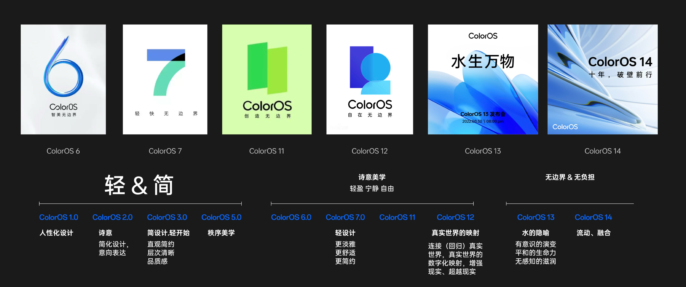
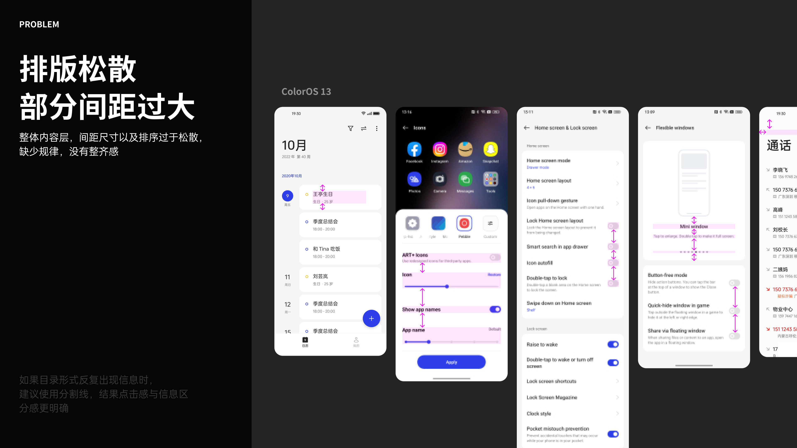
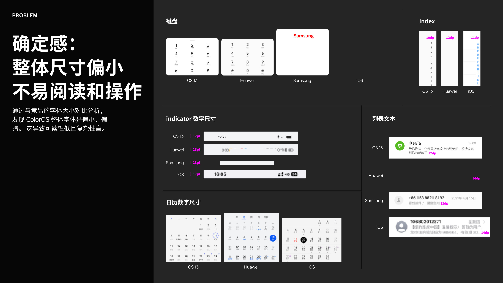
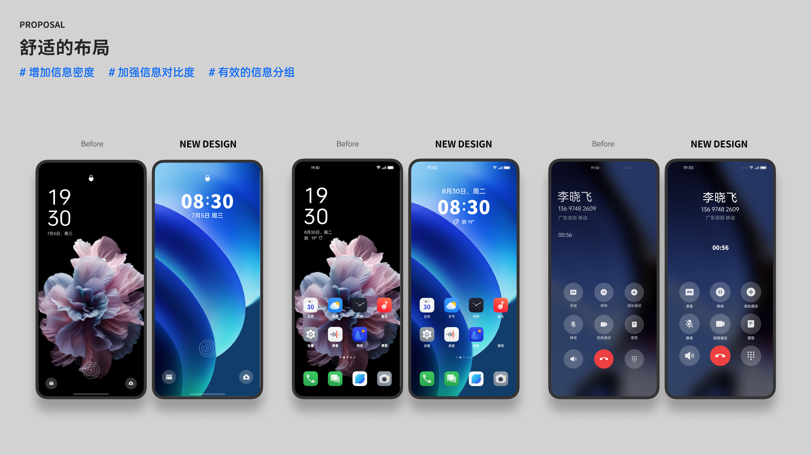
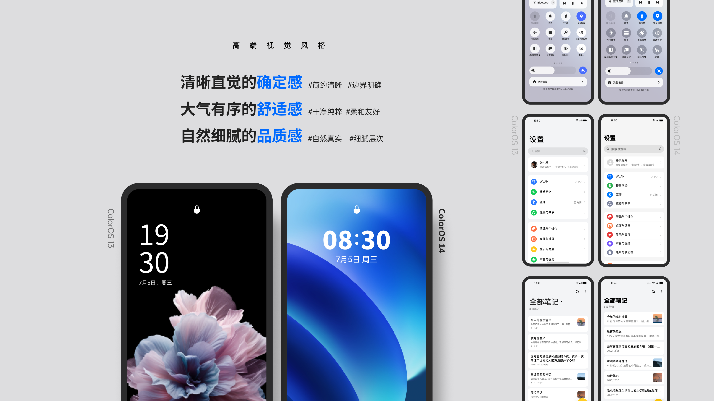

版本设计规划
独立完成 ColorOS 14 设计规划，从用户研究中提炼确定感、舒适感与品质感，推动系统风格升级。ColorOS 15 带领各业务开展规划，ColorOS 16 将方法推广到部门。
项目背景
公司向高端市场转型，系统设计需要兼顾更广泛人群的审美与使用期待。
过去的版本规划多从头脑风暴和单点概念启动，对产品自身演进、竞争变化、用户反馈和技术趋势缺少系统审视。

设计目标
ColorOS 14 要在「无边界与无负担」的设计积累上，让信息更易读、操作更明确、细节更有品质，并把这些要求落实到各团队的版本计划中。
我借鉴腾讯及 OPPO 互联网业务 SP 战略规划中的「五看三定」，以「演进而非创造」为原则，从两类证据入手。
- 看自己 · 复盘产品积累汇总用户反馈，回看过去 12 个月的设计工作，识别需要延续的优势和待解决的问题。
- 看竞争 · 归纳竞争格局梳理主要竞品的特点、行业共性、友商优势和差异化打法。
用户洞察
我深入参与前期用户研究，并结合 ColorOS 13 界面走查，发现高端用户在意的三类问题同样关系到日常使用。字体偏小、选项与控件边界不清，影响识别与操作判断。排版和留白缺少规律，增加查找负担。光影、材质与图形层次薄弱，影响对细节品质的感知。
控制中心和联系人是两个具体例子。前者需要让开启状态容易辨认，后者可以用柔和、有区分度的头像色帮助查找。颜色可以集中用在这些需要辨认的信息上。
用户洞察与设计分析横滑浏览 · 点击看原图

用户反馈 · 开启状态与头像色如何提供辨认线索 
排版间距 · 相关信息之间的距离与列表节奏 
文字可读性 · 对照列表文字、索引与状态栏 
主题色体系 · 色域分布、功能用色与对比度示例
审美主张
把清楚、舒适、有品质的共性期待，转成三项设计主张和对应的改造任务。
- 清晰直觉的确定感 强化文字对比、列表分隔和控件边界。由设计标准团队先推进系统字体、基础控件和权限弹窗。
- 大气有序的舒适感 用柔和的主题色、稳定的间距和清晰的信息分组改善阅读。由设计系统团队推进目录、卡片和控制中心等场景。
- 自然细腻的品质感 打磨材质层次、图标与高频场景的动效。由应用设计团队推进天气、邮件、联系人等应用场景。

按当时的分期计划，14.0 优先推进基础识别改造，布局与细节打磨在 14.1 和 15.0 继续推进。
方案落地
以「舒适感」为例，ColorOS 13 的日历卡片、设置列表和控件区采用的间距不够统一。改造方案先把有关联的信息归到一起，再用字号、对比和间距拉开主次。
- 锁屏与桌面 以时间为视觉焦点，把日期、天气放在附近。
- 通话界面 把联系人信息集中在顶部，单独突出通话时长，底部统一组织操作按钮。
布局优化方案横滑浏览 · 点击看原图

锁屏 · 时间与日期分层 桌面 · 时间、日期与天气组为一体 通话 · 联系人、时长与操作分区
ColorOS 14 同步推进了控件、色彩和排版规则迁移。控制中心的选中态、设置列表的分隔和笔记标题的字阶，展示了这些规则如何用于不同场景。

版本复盘
OS14 发布后，用户反馈集中在细节实现与基础一致性，也出现了对美学方向的质疑。我主持版本复盘，用线下风格复测判断哪些主张可以延续。OS15 集中打磨桌面动效和十大系统场景，并与研发、测试在设计稿阶段前置比较重点入口的新旧方案。ColorOS 15 发布后，整体口碑较上一代改善。
- OS14独立完成规划建立方向判断依据，明确改造重点并拆解团队任务。版本实践
- OS15带领各业务开展规划提供模板，面向所有业务 UX 代表开展培训，并带领各业务结合自身场景做规划。模板与培训
- OS16沉淀部门工作方法将设计规划推广到部门范围，纳入各业务设计单元的工作。部门推广